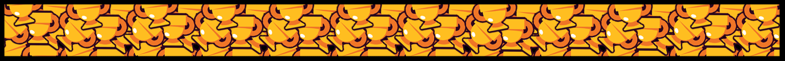

Brawl Stars es un videojuego multijugador para móviles disponible en Android y iOS, desarrollado por Supercell y lanzado globalmente en 2018. La versión beta del juego fue lanzada el 14 de junio de 2017 solo para Canadá, Australia y Nueva Zelanda con temáticas simples y mecánicas difíciles, mientras que la versión global se lanzó agregando un apartado visual con mayor detalles interesantes y diferentes funcionalidades, que se agregaron el 12 de diciembre de 2018. Actualmente lleva 5 años de existencia en el mundo de los videojuegos móviles.
El objetivo principal del juego es conseguir la mayor cantidad de trofeos y brawlers (los personajes de Brawl Stars), para progresar en un camino de trofeos. Los jugadores entran a diferentes modos de juego, con diferentes brawlers, cada uno con habilidades únicas, que luchan en diferentes modos de juego para subirlos de rango, de trofeos y de maestría. También los jugadores pueden unirse a clubes con sus compañeros o amigos y hacer partidas amistosas, jugar en diferentes modos de juego en competitivo o en solitario, o incluso crear sus propios mapas de juego.
Los trofeos son un conteo especial de las estadísticas del jugador. Se consiguen cuando ganas una partida. Tal como se consiguen al ganar, también pueden quitarte trofeos al perder. Si en un modo de juego 3v3, algún compañero posee menos trofeos, se añadirán algunos trofeos extra al acabar la partida y en caso de perderla no se descontará ninguno.
Los trofeos que el jugador consigue con cada brawler se van acumulando en su perfil, aunque también hay un camino de trofeos global. La cantidad de trofeos que posea le permitirá desbloquear recompensas definidas en el camino de trofeos. A medida que se consigan más trofeos,2 las recompensas aumentan y es cada vez más difícil progresar. Las recompensas que se incluyen dentro del camino de trofeos son:
Es la divisa principal del juego. Se puede obtener principalmente de la tienda, de las maestrías y del Brawl Pass, aunque también de las Starr Drops y de ciertos eventos. Se usa para mejorar brawlers y para comprar sus habilidades, aunque también se pueden comprar aspectos plateados y dorados de los brawlers con esta divisa.
Las gemas son la moneda premium del juego. Su diseño es similar al de las gemas de otros juegos de Supercell. Se obtienen principalmente comprándolos en la tienda, aunque se pueden obtener gratuitamente en el Brawl Pass o en eventos. Se usan para comprar monedas, aspectos, reacciones y sprays, y también ofertas de la tienda y/o para desbloquear brawlers. Antiguamente se podían usar para comprar el Brawl Pass, aunque está opción se eliminó el 4 de enero de 2024 en la temporada 2
Los puntos de fuerza son monedas cuyo único y principal uso es mejorar brawlers, junto con las monedas. Se obtienen en el Brawl Pass, en las maestrías y en las Starr Drops.
Los créditos son divisas que sirven para desbloquear brawlers en el Camino Starr. Se obtienen en el Brawl Pass, en las maestrías y raramente en las Starr Drops.
Los blines son monedas que fueron añadidas el 24 de abril de 2023, en la Temporada 18, para sustituir a los puntos estelares. Sirven como alternativa gratuita para comprar cosméticos. Se obtiene principalmente en el modo Competitivo, en el Brawl Pass de pago y en la Liga de Trofeos.
Eran la divisa que servía para progresar en el Brawl Pass, se obtenía en las misiones del Brawl Pass y diariamente. Previo al 12 de diciembre del 2023, se denominaban Fichas de batalla.
Tras eliminar las cajas, los jugadores reclamaban un nuevo sistema de recompensas aleatorias. Los Premios Starr tienen distintas rarezas y cuatro oportunidades de mejorarla, a cada oportunidad puede mejorar la rareza o quedarse como estaba, cada una las rarezas tienen distinta probabilidad de aparecer. Se pueden obtener en eventos, el camino de trofeos, niveles del pase y como recompensas por victorias diarias.
También existen los Premios Starr competitivos, los cuales solo se pueden obtener en el modo Competitivo. Se obtienen al alcanzar las correspondientes marcas II y III en cada rango principal (menos en Maestros).
| Tipos de Premios Starr |
|---|
| Especial |
| Superespecial |
| Épico |
| Mitico |
| Legendario |
| Competitivo |